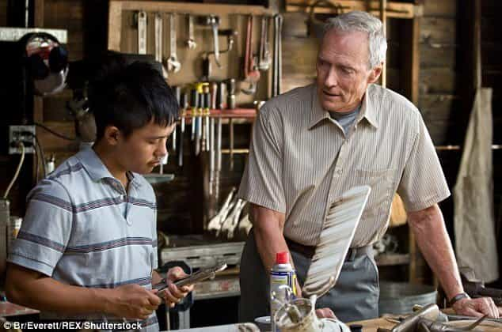

As I grow older and hopefully wiser, I feel there is a moral duty in each and every one of us to give back, as it were, to the world around us by making a contribution. This contribution can be anything from sharing acquired knowledge to spreading monetary wealth — if such a fortunate thing might have happened to your personal finances — to giving of your time to those less fortunate than you.
If you make it only about yourself and only you, I can guarantee you that you’ll be emotionally empty and find yourself unfulfilled in your spirit. This is because if no one outside of yourself affirms that you have internal quality to draw from, your internal mirror will not reflect any true, tangible value back to you about who you are.

Have you learned the bigger, manly lesson behind Clint Eastwood’s Gran Torino movie?
I recall a case study many years back about who were the happiest people on the planet. As funny as it may seem to some, the results showed that those immersed in goodwill work, where the recipient had no way of paying them back in any way, were the happiest of most contented of all. This finding coincides with what science has come to show as the reward center of the brain; the part that releases not just endorphins but also dopamine. The trigger cannot be pulled with just any random act of our choosing; it requires specific stimuli.
Now, there will certainly be those amongst the readership here that will balk at what I am about to say, and to them I retort, in advance: move on. But, if you have ears to hear, and if you can value another person’s life experience who have reached his mid-forties, then read on and take stock of what I am about to share. Because what I have to say here is meant for the betterment of world around me, and specifically, my words are geared to the young men and men in general out there.
Now some might ask, am I so brazen as to assume that I have any right to believe that my understanding of “right living” is palpable and applicable across the board? Fuck, yes. Any man, or person for that matter, who tries to walk in accordance with what they feel and believe to be true, and doesn’t believe that they have the stock to instruct others ain’t worth shit. Your belief system must be rock solid, and you yourself must be convinced, through trial and error, that you are on the right path. You must have conviction, and you must make a solid attempt to walk in accordance with your beliefs.
I’ve been a wrestling coach and personal trainer now for the better part of nearly 14 years, teaching folks from all walks of life in about a dozen countries, plying these trades, and a lot of what I do has to do with psychology. I’ve learned and seen. I’ve become a mentor to many of those whom I’ve trained, and some of the life lessons I’ve dispersed outside of the physical aspect of my coaching have been received with open ears and minds. Some have even come back to thank me, years later, for the guidance given and lessons learned. So yes, I do believe I can help many around me. Not all, but many.
Having been fortunate enough to travel the world many times over in my global excursions as both a professional wrestler and rock musician, I have seen many cultures and shared my time with peoples of many nationalities from many walks of life. My life experience, therefore, is quite broad here in my mid-forties. Add to that the life teachings of a morally strong father who is a preacher, and voilà, you have a pretty solid ethical foundation upon which this man’s personal house has been built. The lessons learned early on in life are certainly not lost in transition, as the years roll on.
The Upright Agenda

Gladiator: another movie that teaches the viewer what true manliness embodies.
For years and years now, I’ve looked around and digressed at the movements and undercurrents of modern society, and the not-so-slow erosion of the moral fabric and backbone of our Western society. A lot of this has to do with our excessive desire for hedonistic pleasure, much like the times of Ancient Rome, just before it’s empirical collapse. People today are more interested and immersed in frivolous, vain pleasures than at any time in recent world history. A lot of this has to do with the advent of technology, and the easy distractions that it provides its captives.
Never before has it been so easy to become entrapped in an alternate reality, one which is lived only inside of one’s own head. Through the advent of the internet and the explosion of social media, people are snared into a false world of virtual existence that only feeds their growing inner emptiness. Less face-to-face encounters, more cluttered brain activity and mental overload by cheap, meaningless thrills brought on by “likes” and “followers,” in addition to useless entertainment and bullshit “news” that are forgotten by the end of the week, at the very latest. People’s heads are cluttered full, but their spirits are vexed and their souls are empty.
In this conundrum, folks today are increasingly mind-fucked. There’s no nice way of putting it. And for the record, I refuse to be politically correct to appease the people out there who feel offended at the slightest thing that inconveniences them. That’s another area, where we, as a culture, have strayed far off track: we try to use “convenient language” that wouldn’t rock anyone’s boat or stir any backlash.
We’ve become gutless and spineless in the day of political correctness, afraid of what those around us might say to dissuade our beliefs or stance. To them I say: if the shoe fits, wear it. If you feel offended, you have reason to be offended. Point blank. Check your own beliefs and values and see why anything that rubbed you the wrong way was so potent an aggravator in your case. And if your beliefs or attitudes have been challenged, then you have a personal obligation to do some inventory and housecleaning, because no one can survive inner civil war within themselves and come out whole.
The problems today goes way beyond the prior generation finding fault in the younger generation. This is not a case of grumpy older men picking apart strapping young lads for the sake of ego or “not just getting it.” Trust me when I tell you, your fathers (and mothers) went through all the shit you’ve gone through internally, because although technology advances, people inherently stay the same. Our internal makeup as individuals has remained the same for thousands of years, despite the hogwash social engineering that evolutionary dogma tries to push on us.
This is proven by the fact that even old, antique texts still resonate with people today. The teachings of, per se, Socrates, are still as relevant today as they were in 470-399 B.C., as wisdom is universal. Therefore, there is no such thing as ”not getting it”, when it comes to the older generation (read: accumulated life experience) picking apart the fallacies of the younger generation (read: the indoctrinated). Only a fool would discount, no-sell and bypass the information, advice or teachings of those that are far ahead of them in the game of life.
The Invaluable And Central Lesson To Be Learned

Men are meant to lead the charge, as they have through history, building empires and constructing great cultures, so only direct, strong talk should be expected by anyone that holds themselves to actually be a man. Surely, Napoleon was not a pandering twit, who placated to those he addressed, in order not to ruffle any feathers. Nay. Leadership is something else altogether, and men, since the beginning of time, have been called to lead. Regardless of your spiritual beliefs, think of the lessons told in the first chapters of Genesis, where Adam and Eve fell into sin and God allotted the wages of punishment for their disobedience.
Then He (God) said to the woman, “I will sharpen the pain of your pregnancy, and in pain you will give birth. And you will desire to control your husband, but he will rule over you.”
“And to the man he said, ‘Since you listened to your wife and ate from the tree whose fruit I commanded you not to eat, the ground is cursed because of you. All your life you will struggle to scratch a living from it.'” (Genesis 3:16-17)
Now anyone with an iota of understanding and a rational, clear mind can think of these passages for just a moment and see some mighty weighty truth behind them. They depict exactly how things have turned out. This is also where I come to my intended man-to-man talk with the males of species out there, and it concerns men’s relationship to women, by and large.
For whatever reason, nowadays, men have, to a great extent, become emasculated. Their balls have been shorn and their authority is not just questioned and balked at, it is damn near dismissed. Many guys today don’t even know what it is to have authority or to walk with their heads and chests up high, taking on the role as the alpha of the species. Modern society sure doesn’t want it. And this is a damn tragedy.
Be it the onslaught of first, second, and now third-wave feminism, each more ugly and belligerent than the last, or the social engineering of unisex dogma, teaching boys and men to be passive, dress in pink and get in touch with their feminine side, the results of this ambiguous infusion have been dire. Men today are lost, out of touch with themselves, slaves to their gadgets and increasingly beta, therefore easily controlled by outside influences and others. Men, in short, have sold themselves down the river… but for what?
Here’s my question to you: what have men gained by giving up their position of authority and selling out their masculine fortitude, much like Adam shifting the blame of him eating the apple to Eve, who extended the forbidden fruit to her husband? How has it benefited men, that they’ve become passive and accepting, which are feminine, motherly, nurturing traits to begin with?
Looking at the statistics of gamers locked in their basements, young men dropping out of the educational system, male suicide rates, the onslaught of depression meds and the mass explosion of internet porn, it’s damn clear that men are not well at all.
Where your grandfather was out at the dances like a killer wolf looking to land your grandma in the hopes of getting fruitful with her, guys today are settling for a POV with Asa Akira, imagining it’s them, getting the royal treatment, in lieu of learning the age-old mating and courting game that countless generations of men have implemented with women for as long as people have been around. I don’t know about you, but it all sounds and seems pretty pathetic to me. Would you rather live it, or just dream it?

The age-old dance of the predator and prey, an essential dynamic to intergender relationships.
The Great Error Of Men At Large
It’s here, in the area of sex and male-female relations, where men have gone so badly astray, by and in large. It’s this hemisphere of the human experience, where, for some God-forsaken reason, men have sold their manliness and masculine forté down the river, in hopes of placating women and appeasing their every desire.
Now remember the lesson from Genesis 3:16 where God says that as a result of the first human couples’ disobedience, the woman would seek to control the man, but the man would still rule over her. It’s an inherently rotten deck of cards that we’re dealt at birth. Women will always try to control men, as it is part of their fallen nature. You’re going to get both sides of the coin when you get involved with a woman, every single time, and it’s up to you, as the man, how you learn to navigate through the woman’s inherent desire to control you.
Of course, you can always hope that she gets spiritually enlightened to the fact and smartens herself up, taking the red pill that is good for her. Yet, the man’s original place and position was one of leadership, for he was created first and God gave expressly the man the commandment not to eat from the Tree of Knowledge in the Garden of Eden (Genesis 2:15-18).
Tending to your woman’s needs is quite reasonable and proper, but bowing to their every want is a neverending train of unhappiness, exhaustion and vanity (in short: hedonism). You are simply not responsible for fulfilling the wants of other people. Wants are cherries on top of the cake, their little bonuses, and should be seen as and enjoyed as such.
Happy wife, happy life. Ever hear of that one? Where did this garbage adage come from? Let’s flip it around: happy husband, happy life. Doesn’t rhyme, does it? Maybe that’s why no one ever thinks about the flipside of the coin or even questions the reverse. But it stands to be questioned: why are we, as men, trying so hard to please and appease women? What the hell are we gaining in all of this pandering, soft agreeability? What has led us to believe that women should somehow be gifted with the finest of all experiences, pleasures and treasures, and we, as men, are dictated to provide them with such simply because they have two X chromosomes?
One of the saddest cases of feministic hogwash in cinema, What Women Want, featuring Mel Gibson reaching an all-time low, showcasing how pathetic being beta really is.
Over the past few decades, the role of men has considerably changed from what it had been for thousands upon thousands of years. A large part of that has to do with men bending over backwards for women now, which is something that didn’t happen to this absurd extent in the past. It’s like men have become fearful of the reactions and opinions of women, and in order to stay the course and keep the females (I don’t say ladies, because that is a term which should be used sparingly, if the etiquette lends to it) happy, men have sold their cojones down the river.
What it all boils down to is selling out to the illusional ”power of pussy”, which really, is nothing more than men selling out for a piece of the pie that they desire here and now. Put a rain check on that thing and let your hunger build! Hunger makes you sharp.
So men have given women not just what they’ve wanted, but more. They’ve abandoned alpha male traits and become betas in an attempt to keep their women happy. Yet, the divorce statistics are off the charts and marriage is seen largely as a joke now. Don’t believe me? Just think of nearly every sitcom out there. The single mother/single parent households are racking up beyond measure.
There’s a distinct (albeit erroneous) glorification of individuality and the freedom of being single. But hey, keep on drinking to forget your misery, popping those psyche meds and depression pills, and remember that social media will be there to spike your dopamine, regardless of the law of diminishing returns!
There’s no mentorship anymore on a societal level. Well, not unless you pay through the nose for it by taking a course specifically engineered for that very purpose. Back in the day, however, the elders of whatever tribe or culture passed those essential life lessons on to the younger stock of pups as part of the daily grind. Fathers taught their sons the essentials of masculine skills and values, where mothers passed on to their daughters the virtues and know-how of being a good wife and mother in turn. This has all been done away with now, and we, as a culture, are reaping it’s bitter fruits, thorns and thistles.
Time For Resolution
It is men at large that I rally to “man the fuck up” in today’s ever-convoluted, muddied waters of confusion and displacement. It’s time to take back the reins, to step into a place of personal responsibility where you own your shit, where you implement hard resolve in leading the charge.
Your inner person and self-worth will thank you for it. Your ego will find a healthy, strong embodiment, in lieu of boastful, empty egotism. Your close community will sense the change, and the chips will start to fall into place, from your personal relations right down to your business dealings.
Oh, there will be plenty of backlash and mockery. The world at large will not understand, for the public consciousness and conscience is sedated. Expect to be shit upon and gear up in full battle armor. Just stand strong, like building your body up at the gym, and before long the empty clutter and non-beneficial opinions of others won’t even trifle you.
Become a man of your word. Stand like a rock. Act like a man, like the heroes of lore and history have stood before you, because they are your role models and predecessors. Stop pandering and placating to women, trying to appease them and their every whim, in the sorry hopes of landing a little piece of pussy. Don’t sell your manliness down the river.
Know your stock, have some respect for yourself. Have some rock-solid standards. Aim higher. Go for a unicorn, rare as they may be. Be a hunter. An adventurer. Step up to the challenge and make your life interesting. Be the hero of your own life story. There’s a lot of false advertising out there. Don’t fall for the hype and mirage. Don’t believe the bullshit. Test the waters, try the ice before stepping out onto it. Make better choices. Own your shit. Find a cause worth fighting for, because every man needs a worthwhile battle to discover his own power. Take responsibility. Take charge. Be a leader. Become an alpha.
The Payoff
So, what’s the upside to all of this? Feeling like you are empowered. Feeling like you might even understand a small iota of what Winston Churchill preached when he spoke to his peoples in 1940 at the time of The Battle of France, in the face of the Nazi threat.
Another upside? Gaining the respect of women, and more specifically, the woman in your life. Pussy follows in quick order. It’s the natural order of things, as it creates the needed polarity for intergender relationships.
Another upside? Personal clarity. You will be able to cut through the riff-raff much easier than ever before in the past. You will be able to see things for what they are, not for what you have been told they be.
Life is short. Don’t waste any more of it. Your golden youth is only for a moment, but consequences can carry over a lifetime.
Read more: Taking The Red Pill Is One Of The Hardest Things A Man Can Do